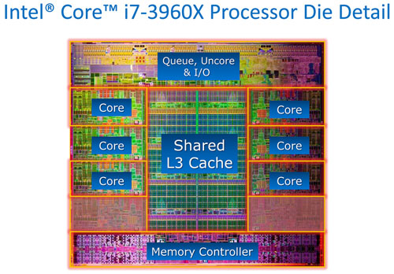
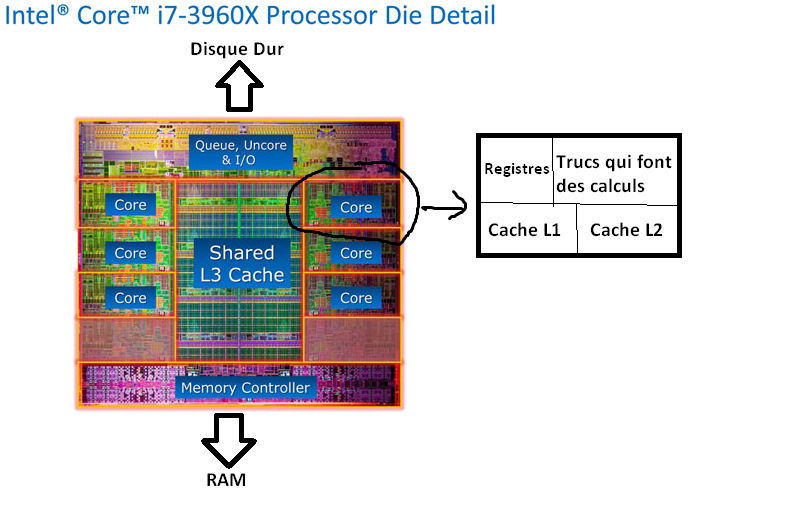
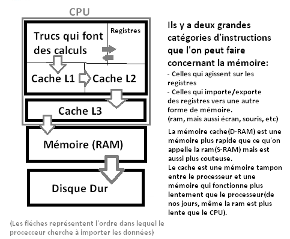
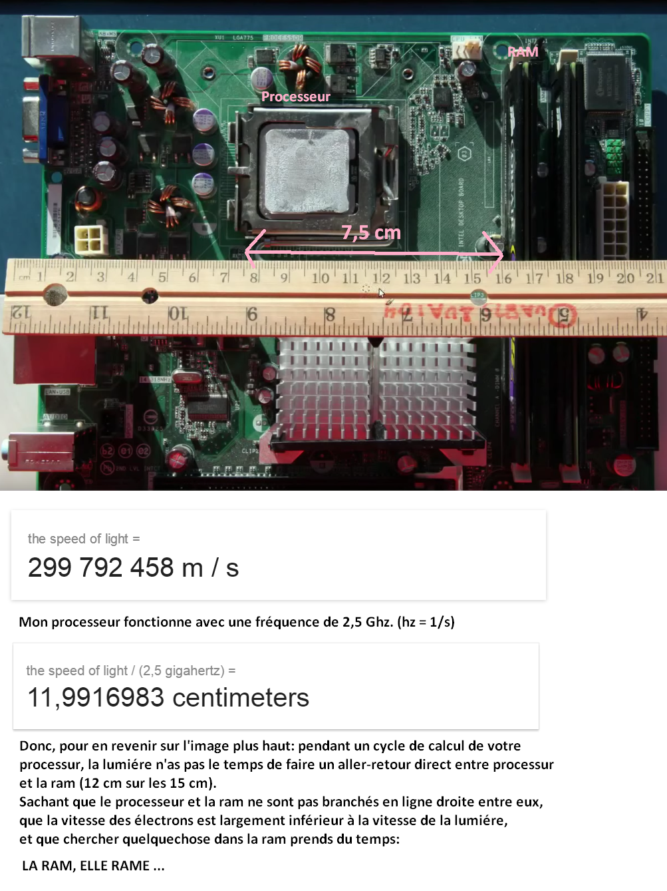

Introduction
Voici à quoi ressemble un processeur: 
Chaqun de ces coeurs se compose d'une unité de calcul, de registres(toute petite mémoire) ansi que deux niveaux de mémoire D-RAM appelé Cache. Chaque niveau de cache étant plus grand que le précédent. 

 Le but de cette petite introduction étant de bien vous faire comprendre que même avec nôtre materiel actuel, il est important de savoir optimiser l'accès à la mémoire afin de faire des programmes plus performants (se servir du cache, mémoire étant au plus proche des unitées de calcul). Ceci étant d'autant plus important dans le cadre d'un systeme avec des contraintes de réactivité fortes/temps réel (tel que les jeux vidéo, sondes météo ou encore d'un rover sur mars).